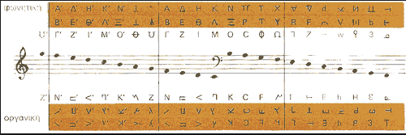

Durante la prehistoria si bien hubo música los registros de esta son escasos sino nulos,
la ausencia de notación musical al menos en Europa dificultan la tarea de poder recrear la música de este periodo,
es por ello que se comenzará hablando desde la edad antigua.
Los primeros documentos musicales encontrados datan de este periodo, aun así estos son escasos y poco precisos,
por lo que las recreaciones musicales pueden no ser exactamente fieles a la realidad. Para entonces la cultura
griega era la que contaba con un sistema musical mas desarrollado y descriptivo, incluyendo una notación musical
(muy distinta a la que se usa actualmente) y un sistema tonal definido.
La notación usada se basaba en su propio alfabeto, usando una combinación de dos letras para representar cada tono
como se puede observar en la siguiente imagen:

Los griegos usaban música para distintas ceremonias, tales como funerales, fiestas o como acompañamiento en el teatro. El instrumento principal de la música griega era la lira, en la cual se basaron para hacer su escala de tonos; teniendo en cuenta los instrumentos encontrados, registros históricos, obras literarias, conocimiento cultural y la propia notación musical se puede presentar una recreación de como se cree que se escuchaba la música griega entonces: